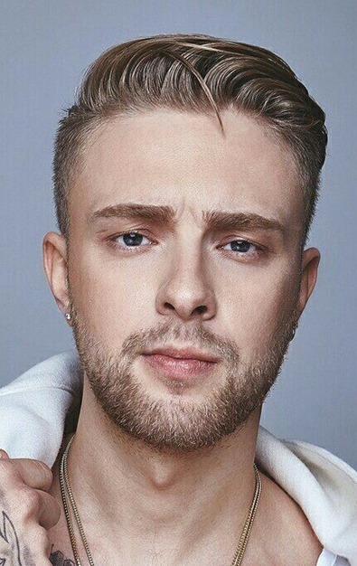
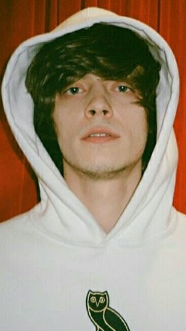

Artist

Васи́лий Миха́йлович Вакуле́нко (род. 20 апреля 1980 года, Ростов-на-Дону, РСФСР, СССР) — российский музыкант (исполнитель рэпа и других жанров, битмейкер, композитор), телерадиоведущий, актёр, сценарист, режиссёр и продюсер. С 2007 года — совладелец лейбла «Gazgolder». С октября 2019 года — владелец футбольного клуба СКА (Ростов-на-Дону)
Известен под творческими псевдонимами и проектами Ба́ста, Ногга́но, N1NT3ND0 (Нинте́ндо); ранее — Баста Хрю, Баста Басти́лио. Бывший участник коллективов «Уличные звуки» (1996), «Психолирик» (1997—1998), «Свободная зона» (2000—2001), Bratia Stereo (2011—2018).
В 2011 году был ведущим на радио Next FM, затем — ведущим «Хип-Хоп ТВ» на «Газгольдере». Наставник в четвёртом (2015), седьмом (2018) и девятом (2020) сезонах телешоу «Голос», в пятом (2018), седьмом (2020), восьмом (2021) и девятом (2022) сезонах проекта «Голос. Дети». В 2016—2017 годах — ведущий эфиров «Gazgolder Live» на радиостанции DFM, с 2018 года — интервьюер в проекте GazLive. В 2017 году был членом жюри в проекте «Голос улиц» на телеканале «Пятница!». В 2019 году — член жюри второго сезона шоу «Песни» на телеканале ТНТ.

Andro (настоящее имя — Иоанн Жани Кузнецов; род. 19 января 2001, Киев) — российский рэп-исполнитель.
Родился 19 января 2001 года в Киеве в цыганской семье. По национальности — ром. Семья часто переезжала и жила в разных странах, поэтому Andro окончил только четыре класса гимназии.
В 2014 году получил первую известность, записав вокал для припева песни «Санта Лючия» группы Quest Pistols. В 2016 году Andro выпустил дебютный сольный сингл «Удиви меня». В январе 2019 года песня «Замело», записанная совместно с El'man, вошла в топ-30 чарта ВКонтакте. В марте туда же попала песня «Инопланетянин», которая достигла 9 строчки, а также заняла 12 место в чарте Shazam. В августе в чарт ВКонтакте попала песня «Болен твоей улыбкой», а в декабре — песня «Моя душа».
Также в 2019 году был выпущен дебютный альбом «Moon Flame», вошедший в Топ-10 российского чарта Apple Music. Музыкальный критик издания InterMedia Алексей Мажаев поставил ему 7 из 10 баллов, отметив, что «альбом демонстрирует талант, музыкальность и чувство вкуса Andro, вместе с тем пластинку очень портят отсутствие разнообразия и крепкая привязанность артиста к модной вокальной манере».
В марте 2020 года песня «Мадам», записанная вместе с Jony, несколько недель была лидером чартов ВКонтакте и Apple Music.
В мае 2020 года сингл «X.O.», записанный совместно с The Limba, возглавил чарт ВКонтакте и Apple Music. По итогам 2020 года песня вошла в Топ-10 самых популярных песен чарта Apple Music в России и Топ-5 чарта ВКонтакте.
В марте 2021 года вышла совместная песня Andro и Скриптонита «Dragon», занявшая высокие места в основных интернет-чартах.
В 2021 году Andro выпустил второй альбом — «Jani Gipsy», вошедший в Топ-10 российского чарта Apple Music.
В 2023 году запланирован выпуск третьего альбома[.
JONY (наст. имя — Джахид Афраил оглы Гусейнли, род. 29 февраля 1996, Баку, Азербайджан) — российский певец и автор песен. Победитель второго сезона шоу «Маска» (2021) на телеканале НТВ.
Ещё во время учёбы в университете Джони начал записывать различные кавер-версии популярных песен и публиковать их в в своём профиле в Instagram. Вскоре молодого певца заметил Эльман Зейналов (El'man). Он пригласил Джони в свою команду RAAVA Music.
Джони начал работать над собственными песнями и через некоторое время выпустил пять композиций — «Пустой стакан», «Френдзона», «Звезда», «Аллея» и «Без тебя я не я» (совместно с HammAli & Navai). Клип, снятый для песни «Аллея», получил больше 100 миллионов просмотров на Youtube и принёс артисту известность за пределами Интернета.
В сентябре 2019 года Джони выпустил песню «Комета», которая вскоре возглавила чарт в Apple Music и стала «визитной карточкой» певца.
В 2020 году вышел альбом «Небесные розы». Наиболее успешными стали четыре композиции: «Ты беспощадна», «Мир сошёл с ума», «Ты пари» и «За окном дожди».
В 2021 году покинул RAAVA Music и решил заняться сольной карьерой.

Его́р Никола́евич Була́ткин, род. 25 июня 1994 более известный как Его́р Крид, — российский певец, рэпер, автор песен, актёр. Сольную карьеру начал в 2011 году под псевдонимом «KReeD», сейчас выступает под именем Егор Крид. Является автором и исполнителем собственных песен.
Родился в Пензе. Семья была музыкальная: мама занималась вокалом, папа с друзьями играл в музыкальной группе. Егор с детства мечтал стать музыкантом. Свои стихи начал писать в 11 лет. Играл на гитаре. С юности увлекался хип-хопом и рисовал граффити. Занимался шахматами.
Егор окончил пензенский лицей современных технологий управления № 2 с углубленным изучением английского языка. Его первый крупный концерт в Лужниках состоялся в день выпускного. В 2015 году Егор поступил в РАМ им. Гнесиных на продюсерский факультет, однако учёбу пришлось прервать из-за насыщенного гастрольного графика и взять академический отпуск.
Всё отрочество Булаткина связано с созданием песен, посвящённых любовным переживаниям и проблемам во взаимоотношениях между людьми.

Григо́рий Алексе́евич Ля́хов, род. 10 января 1994 более известный под сценическим псевдонимом OG Buda, — российский хип-хоп-исполнитель, автор песен, актёр, участник творческих объединений «RNDM Crew» и «Melon Music».
3 июля 2018 года вышел сингл «Tourlife», значительно расширивший фан-базу Григория, который является трибьютом к синглу «Moonlight» покойного рэпера XXXTentacion. В этом же году благодаря Obladaet, Григорий познакомился с Платиной, с которым в дальнейшем начал плотное сотрудничество. 25 октября 2018 года состоялся релиз дебютного мини-альбома «Сладких снов», записанный совместно с Платиной. 21 ноября 2018 года вышел первый совместно с Платиной музыкальный видеоклип «Это не любовь», в котором также в качестве камео появился Федук. Поначалу мать Григория не верила в успех сына, но после того, как он принёс ей первые большие заработанные деньги, она переубедилась в этом.